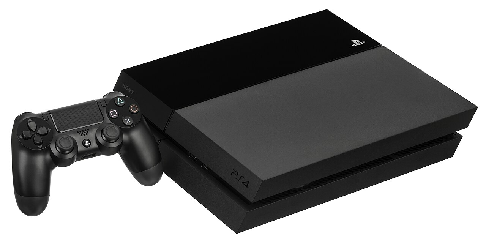

PlayStation 4 (2013)

(sugestão: Wikimedia Commons, anotando a fonte)Liderou a geração com forte foco em jogos de história para um jogador e vendeu mais de 100 milhões de unidades.
Jogos que marcaram
- God of War (2018)
- Bloodborne
- Marvel's Spider-Man
Oque o PlayStation 4 significou:O PlayStation 4 representou a consolidação dos videogames como uma das principais formas de entretenimento da era digital, aproximando ainda mais os jogadores de experiências cinematográficas, comunidades online e conteúdos compartilhados pela internet. Lançado em 2013, o console da Sony chegou com uma proposta de oferecer maior facilidade para os desenvolvedores, desempenho gráfico aprimorado e uma experiência mais conectada. Com uma biblioteca diversificada de jogos, o PS4 conquistou milhões de jogadores e marcou uma geração que acompanhou a expansão dos jogos digitais, das transmissões ao vivo e das comunidades virtuais.